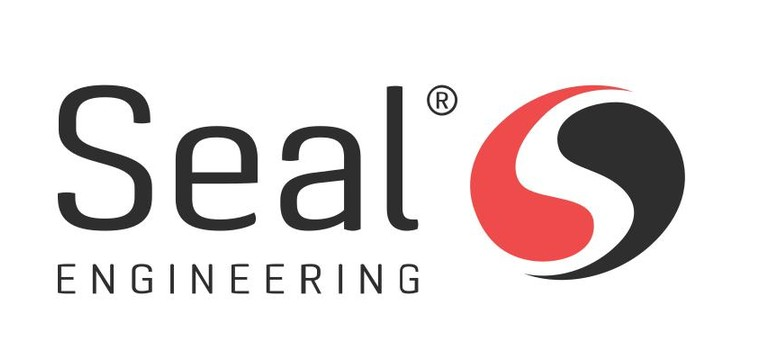
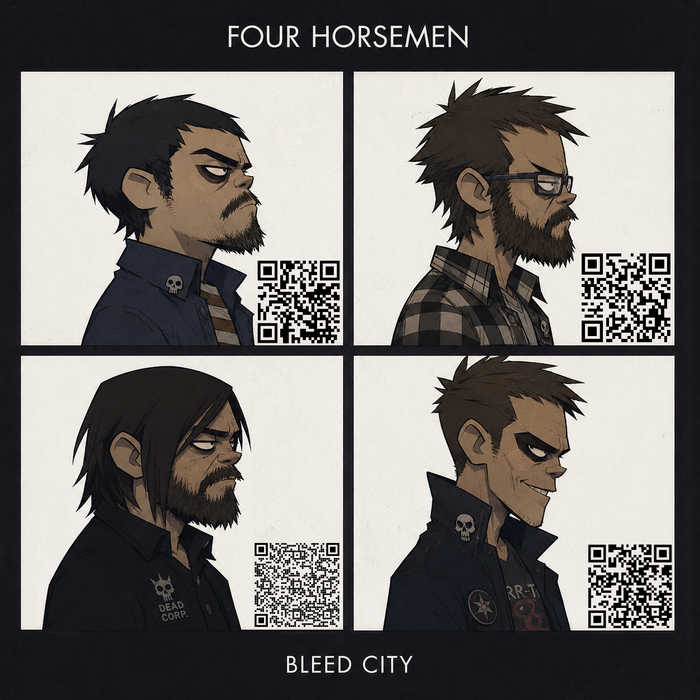

Problem
Customer orders arrive as several documents with detailed requirements and cross references. Changes are not always clearly marked, which makes manual checking time consuming and error-prone.
Bachelor Thesis · ITF32012 · Spring 2026
A portfolio case page for a bachelor project carried out with Seal Engineering AS. The project explored how a web application can reduce manual document comparison by importing customer order documentation, extracting key values, validating document sets, and presenting structured compliance results.


Seal Engineering receives complex customer order documentation where requirements, references, and internal documentation must be checked carefully. The thesis solution was designed as a deterministic MVP that supports the order office by making document import, validation, mapping, and compliance checking more structured and less dependent on manual comparison.
Customer orders arrive as several documents with detailed requirements and cross references. Changes are not always clearly marked, which makes manual checking time consuming and error-prone.
Build a web application that can import PDF and Excel documentation, extract key information, identify relevant document types, and support compliance assessment between customer and internal requirements.
The delivered MVP demonstrates a workflow from file import and validation through document mapping and compliance check presentation. The prototype is tailored to a selected customer document set.
Short video demonstration of the solution workflow, showing how the user can import a document set, validate files, extract and map values, and receive structured compliance feedback.
The implementation follows the user journey from uploading documentation to receiving structured feedback about extracted data and possible mismatches.
The user uploads a document set containing order and requirement documentation, including PDF and Excel files.
The solution checks whether the expected file types are present and gives the user immediate feedback before the compliance flow continues.
Text and values are extracted from the uploaded files and routed to document-specific mappers for Purchase Order, Material Documentation Package, MDRL, and Administrative Requirements data.
The raw content is transformed into structured objects so the comparison logic can operate on values instead of unstructured document text.
The structured objects are stored in a database for future reference, versioning, and analysis.
The system compares central values such as order numbers, material numbers, dates, revisions, and document references.
The result is returned to the user interface as understandable tables, checklists, status markers, and detailed document values.
The source archive is structured as a .NET solution with separate Web, Application, Domain, Infrastructure, and test projects. The implementation combines a Blazor-based user interface with API endpoints, MediatR-driven application flows, document extraction adapters, database persistence, and Docker-based deployment support.
Preview the full bachelor thesis report directly on this page.